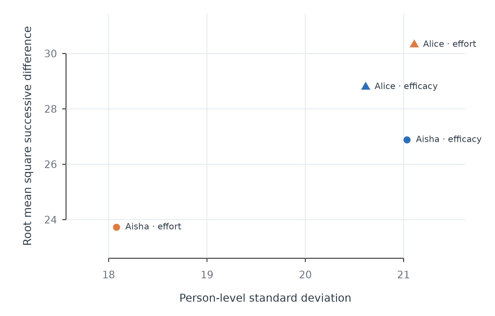

Person-Level Description with describe_persons()
Source:vignettes/describe-persons.Rmd
describe-persons.RmdAnalytic question
describe_persons() answers whether each person’s
repeated series contains enough variation, temporal coverage, and usable
observations for an idiographic analysis. The function takes a
long-format panel, variable names, a person identifier, and an optional
ordering variable. It returns one tidy row per person and variable.
describe_persons() separates overall dispersion from
successive change. The standard deviation measures dispersion around a
person’s mean. The root mean square successive difference measures
movement between adjacent occasions. These quantities describe different
temporal patterns (Jahng
et al. 2008). The lag-one autocorrelation measures carry-over
from one occasion to the next.
Estimate person-level summaries
describe_persons() uses time = "day" to
order observations within each learner. The detail = "full"
setting adds floor and ceiling proportions, acute-change probability,
skewness, kurtosis, linear trend, and the longest run of repeated
values. Table 1 reports two learners and two variables so the full
output remains readable.
descriptives <- describe_persons(analysis_data, id = "name", vars = c("efficacy", "effort"), time = "day", subject = c("Aisha", "Alice"), detail = "full")
descriptives
#> PERSON DESCRIPTIVES
#> Grouping name
#> Time day
#> People 2
#> Variables 2
#>
#> subject variable n miss mean median sd min max rmssd autocor span gap_median gap_max p_floor p_ceiling pac skew kurtosis trend trend_p longest_run
#> ---------------------------------------------------------------------------------------------------------------------------------------------------------------------------------------------------------------------
#> Aisha efficacy 156 0 56.919 61.765 21.034 0.000 100.000 26.881 0.169 155.000 1.000 1.000 0.006 0.019 0.071 -0.669 0.285 0.054 0.152 2.000
#> Alice efficacy 156 0 35.761 36.364 20.614 0.000 100.000 28.790 0.024 155.000 1.000 1.000 0.026 0.013 0.065 0.395 -0.193 -0.013 0.734 2.000
#> Aisha effort 156 0 77.646 82.540 18.080 0.000 100.000 23.724 0.132 155.000 1.000 1.000 0.019 0.026 0.039 -2.020 5.489 0.008 0.793 2.000
#> Alice effort 156 0 59.875 60.811 21.108 0.000 100.000 30.319 -0.032 155.000 1.000 1.000 0.019 0.019 0.071 -0.468 0.084 0.025 0.512 3.000
#>
#> sd = overall spread; rmssd = occasion-to-occasion change
#> autocor = lag-1 carry-over (inertia)describe_persons() reports 156 observations for each
displayed series in Table 1. Aisha’s efficacy mean is higher than
Alice’s, while their efficacy RMSSD values are similar. The result
therefore distinguishes a difference in typical level from a difference
in occasion-to-occasion movement. The gap columns equal one day for
these learners, so a lag represents a consistent elapsed interval.
Plot dispersion against successive change
The figure compares standard deviation with RMSSD and labels every series directly. Position, colour, and symbol jointly identify the variable and learner; the labels make the figure interpretable without a separate lookup.
point_col <- ifelse(descriptives$variable == "efficacy", fig_col["blue"], fig_col["orange"])
point_pch <- ifelse(descriptives$subject == "Aisha", 21, 24)
labels <- paste(descriptives$subject, descriptives$variable, sep = " · ")
figure_begin(c(4.2, 4.8, 1, 2.2))
plot(descriptives$sd, descriptives$rmssd,
xlim = range(descriptives$sd) + c(-1, 1) * diff(range(descriptives$sd)) * 0.12,
ylim = range(descriptives$rmssd) + c(-1, 1) * diff(range(descriptives$rmssd)) * 0.12,
pch = point_pch, bg = point_col, col = "white", cex = 1.5,
xlab = "Person-level standard deviation",
ylab = "Root mean square successive difference")
figure_grid(x = TRUE, y = TRUE)
points(descriptives$sd, descriptives$rmssd, pch = point_pch,
bg = point_col, col = "white", cex = 1.5)
text(descriptives$sd, descriptives$rmssd, labels = labels, pos = 4,
offset = 0.65, cex = 0.76, col = fig_col["ink"], xpd = TRUE)
Figure 1. Overall dispersion and successive change for efficacy and effort in two learners.
Figure 1 shows that overall spread and short-term movement do not occupy one common scale. A series can vary widely across the observation period without changing by the same amount between adjacent days. Both quantities should be reported when temporal instability is substantively relevant.
Assumptions and failure checks
describe_persons() treats successive rows as adjacent
only after ordering within person. The time argument is
therefore required when row order is not the intended chronology.
Missing values reduce the usable pair count for RMSSD and
autocorrelation. A constant series has no estimable correlation and
cannot support a person-specific slope.
describe_persons() defines acute change relative to the
pooled sample unless pac_cutoff is supplied. Analyses that
compare acute-change rates across datasets should use a common
substantive cutoff. The trend and trend_p
columns describe a linear trend. They do not diagnose every form of
nonstationarity.
When to use which
describe_persons() is the first choice for person-level
data sufficiency, location, variability, movement, and timing.
correlate_persons() addresses pairwise within-person
association. variance_components() quantifies how much
sample variance lies within and between people. Model-fitting functions
should follow these checks when the available variation supports the
intended estimand.